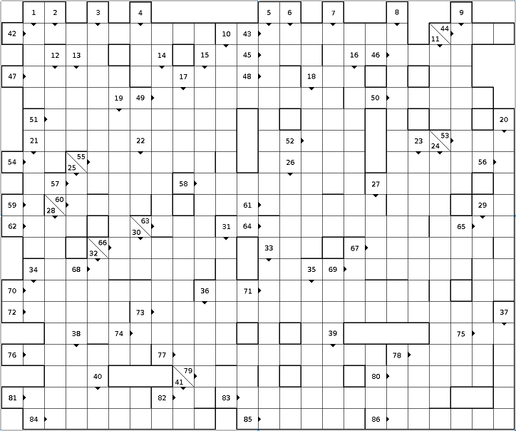

Stefan Kohl

In the GAP session log below, any term - identifier or keyword -
to be filled in into the crossword puzzle has been replaced by number
and direction, enclosed in angular brackets. For example, <44R> stands
for number 44, to the right
and <32D> stands for number 32, down
.
Terms are case-insensitive, and end at bold lines - so for example
<7D> has 8 characters.
For printing, you can download the
graphics in full resolution (1440 x 1200)
and the text as a PDF file.
gap> l := [ "course", " solve", " riddle.", " you", " this", " can", "Of " ];;
gap> <24D>( [ 2, 5, 7, 3, 6, 4, 1 ], l );; <78R>( l );
"Of course you can solve this riddle."
gap> List( [ 1 .. 25 ], <44R> );
[ 1, 2, 2, 3, 2, 4, 2, 4, 3, 4, 2, 6, 2, 4, 4, 5, 2, 6, 2, 6, 4, 4, 2, 8, 3 ]
gap> List( [ 1 .. 12 ], <32D> );
[ 1, 2, 5, 15, 52, 203, 877, 4140, 21147, 115975, 678570, 4213597 ]
gap> <2D>( 4 ) * <59R>( 4 ) + 1;
0
gap> <39D>( <7D>( Integers, 4 ) );
[ 0, 0, 0, 0 ]
gap> <80R>( );
not in any function
gap> <11D>( 2 ) + <11D>( 3 );
E(24)-E(24)^11-E(24)^14+E(24)^17-E(24)^19+E(24)^22
gap> List( [ 1, [ true, false ], "abc", (1,2) ], <83R> );
[ fail, fail, fail, fail ]
gap> List( [ 1, [ true, false ], "abc", (1,2) ], <70R> );
[ true, false, false, false ]
gap> <56R> = Indeterminate;
true
gap> <67R>( SymmetricGroup( 4 ) );
[ (), (3,4), (2,3), (2,3,4), (2,4), (1,2), (1,2)(3,4), (1,2,3), (1,2,3,4),
(1,2,4,3), (1,3), (1,3,4), (1,3)(2,4), (1,3,2,4), (1,4,2), (1,4),
(1,4)(2,3) ]
gap> List( <13D>, <10D> );
[ 1, -1, -1, 1, -1, -1, 1, 1, -1, -1, -1, 1, 1, -1, 1, -1, 1 ]
gap> <22D>( <17D>( [ 1 .. 100 ], <28D> ) );
36524
gap> List( <49R>( 24 ), <20D> );
[ 24, 24, 12, 12, 12, 12, 12, 12, 12, 12, 12, 12, 6, 6, 6 ]
gap> <86R>( <26D>( <61R> ), 2 );
1379
gap> <85R>( [ 1 .. 10 ], n -> n^3 );
3025
gap> <14D>( [ 1 .. 16 ], 2 );
983041
gap> <73R>( <72R>( 1 ) );
Rationals
gap> List( [ GF(2), Integers, [1,2,3], Group((1,2),(1,2,3)) ], <29D> );
[ true, false, true, true ]
gap> <12D>( [ "This", "gets", "all", "smashed", "together." ] );
".Tadeghilmorst"
gap> <5D>;
<5D>
gap> <63R>( [ 1 .. 10 ] );
2520
gap> <37D>( 355/113 );
3.14159
gap> <4D>( <13D> );
355/113
gap> <15D>(CharacterTable("A5"));
[ "1a", "2a", "3a", "5a", "5b" ]
gap> <27D>( <53R>( 27 ) );
10073444472
gap> List( <49R>( 12 ), <51R> );
[ false, true, false, false, true ]
gap> List( <49R>( 16 ), G -> <43R>( <74R>( G ) ) );
[ [ 2, 1 ], [ 4, 2 ], [ 4, 2 ], [ 4, 2 ], [ 4, 2 ], [ 2, 1 ], [ 2, 1 ],
[ 2, 1 ], [ 2, 1 ], [ 8, 5 ], [ 4, 2 ], [ 4, 2 ], [ 2, 1 ], [ 16, 14 ] ]
gap> <40D>( 31 ) - <41D>( 31 );
E(31)^2+E(31)^4-E(31)^5-E(31)^6+E(31)^8+E(31)^16-E(31)^25-E(31)^26-E(31)^30
gap> <82R>( 29 );
E(29)+E(29)^7+E(29)^16+E(29)^20+E(29)^23+E(29)^24+E(29)^25
gap> <58R>( "abc", 5 );
243
gap> <8D>( <27D>( PSL( 3, 4 ) ), 1 );
A5 x L3(2) 2^1
gap> SylowSubgroup( SymmetricGroup( 4 ), 2 );
Group([ (1,2), (3,4), (1,3)(2,4) ])
gap> <81R>( <13D> );
Sym( [ 1 .. 4 ] )
gap> <60R>( (1,2), (2,3) );
(1,2,3)
gap> <77R>( SymmetricGroup( 6 ), <57R>( (1,2,3), (4,5,6) ) );
Group([ (4,5,6), (1,2,3), (4,5), (2,3)(4,6), (1,4,3,6)(2,5) ])
gap> StructureDescription( <13D> );
"(S3 x S3) : C2"
gap> Rationals / <21D>( Rationals, [ 1/2 ] );
<algebra over Rationals>
gap> S := [ 1, 2, 4 ];;
gap> <66R>( S, 3 ); S;
[ 1, 2, 3, 4 ]
gap> <16D>( S, [ 7, 8 ] ); S;
[ 1, 2, 3, 4, 7, 8 ]
gap> <17D>( <33D>( GAPInfo ), Length );
[ 7, 4, 10, 13, 17, 12, 17, 17, 9, 8, 18, 19, 20, 16, 12, 18, 12, 10, 15, 25,
21, 9, 15, 14, 12, 8, 5, 16, 21, 16, 13, 20, 17, 20, 33, 22, 13, 23, 12 ]
gap> HasSize = <31D>( <27D> );
true
gap> <78R>( Tuples( [ 1, 2 ], 3 ) );
[ 1, 1, 1, 1, 1, 2, 1, 2, 1, 1, 2, 2, 2, 1, 1, 2, 1, 2, 2, 2, 1, 2, 2, 2 ]
gap> n := 27;;
gap> <69R>
> <75R> n mod 2 = 0 then n := n/2; <46R> n := 3*n+1; <48R>;
> until n = 1;
gap> n;
1
gap> true <79R> <45R> false;
true
gap> <84R>( <84R>( <61R> ) ) = <61R>;
true
gap> [[-1,0],[0,-1]] <54R> <57R>( [[1,1],[0,-1]], [[-1,-1],[0,1]] );
true
gap> <76R>( (1,2,3)(4,5,6), Combinations( [ 1 .. 4 ], 3 ), OnTuples );
[ [ [ 1, 2, 3 ], [ 2, 3, 1 ], [ 3, 1, 2 ] ],
[ [ 1, 2, 4 ], [ 2, 3, 5 ], [ 3, 1, 6 ] ],
[ [ 1, 3, 4 ], [ 2, 1, 5 ], [ 3, 2, 6 ] ],
[ [ 2, 3, 4 ], [ 3, 1, 5 ], [ 1, 2, 6 ] ] ]
gap> Action( <57R>( (1,2,3), (3,4,5) ), Combinations( [ 1 .. 5 ], 2 ), <55R> );
Group([ (1,5,8,10,4)(2,6,9,3,7), (2,3,4)(5,6,7)(8,10,9) ])
gap> TransitiveGroup( 10, TransitiveIdentification( <13D> ) );
A_5(10)
gap> <68R>( <13D>, [ 1 .. 10 ] );
[ [ 1 .. 10 ] ]
gap> for x <65R> <3D>( Rationals ) <6D>
> <62R>( l, <36D>( x ) );
> <34D> Length( l ) > 20 then break; <48R>;
> od;
gap> l;
[ 0, 1, -1, 0.5, 2, -0.5, -2, 0.333333, 0.666667, 1.5, 3, -0.333333,
-0.666667, -1.5, -3, 0.25, 0.75, 1.33333, 4, -0.25, -0.75 ]
gap> IsOperation( <9D> );
true
gap> <64R>( <61R>, 17 );
7
gap> Collected( List( Tuples( [ 1 .. 4 ], 4 ), <35D> ) );
[ [ 1, 175 ], [ 2, 65 ], [ 3, 15 ], [ 4, 1 ] ]
gap> List( [ 0 .. 12 ], k -> <25D>( <19D>( 13, k ), <19D>( 13, k + 1 ) ) );
[ 1, 13, 26, 143, 143, 429, 1716, 429, 143, 143, 26, 13, 1 ]
gap> <38D>( Group((1,2,3),(2,3,4)), Group((1,2)(3,4),(1,3)(2,4)) );
Group([ (1,2)(3,4), (1,3)(2,4) ])
gap> <27D>( <42R>( [[1,0],[1,0]], [[0,1],[0,0]], [[0,0],[1,0]] ) );
7
gap> Q := [1,1];; for n in [3..32] <30D> Q[n] := Q[n-Q[n-1]] + Q[n-Q[n-2]]; od;
gap> <1D>( Q ); Q;
[ 1, 1, 2, 3, 3, 4, 5, 5, 6, 6, 6, 8, 8, 8, 9, 10, 10, 11, 11, 12, 12, 12,
12, 14, 14, 16, 16, 16, 16, 16, 17, 20 ]
gap> <50R>( [ 1 .. 1000 ], n -> <45R> IsPrime( n ) <79R> 2^(n-1) mod n = 1 );
341
gap> List( Arrangements( [ 1 .. 4 ], 4 ), l -> <23D>( <18D>( l ) ) );
[ 1, -1, -1, 1, 1, -1, -1, 1, 1, -1, -1, 1, 1, -1, -1, 1, 1, -1, -1, 1, 1,
-1, -1, 1 ]
gap> List( [ 0 .. 20 ], n -> <52R>( SIN_FLOAT( <37D>( n/20 * 355/113 ) ) ) );
[ 0, 265/1694, 7680/24853, 2975/6553, 9297/15817, 7711/10905, 11251/13907,
1496/1679, 6121/6436, 5375/5442, 1, 6097/6173, 7967/8377, 9818/11019,
1292/1597, 17293/24456, 7603/12935, 5427/11954, 682/2207, 12791/81766, 0 ]
gap> F2 := FreeGroup(2);; G := F2/[F2.1^2,F2.2^F2.1*F2.2,Comm(F2.1,F2.2)^2];;
gap> <47R>(KnuthBendixRewritingSystem(Image(IsomorphismFpMonoid(G))));
[ [ f1^-1*f1, <identity ...> ], [ f1*f1^-1, <identity ...> ],
[ f1^2, <identity ...> ] ]
gap> MakeReadWriteGlobal( "<71R>" ); Unbind( <71R> );
gap> Factors( 27^41 - 41^27 );
Variable: '<71R>' must have an assigned value at
Point := <71R>( Point, q ^ qExponent, n, a );
called from
ECMTryCurve( n, Curve, X, Z, a, Limit1, Limit2, StartingTime ) called from
...
| Back to main page | Last modified: 21-Feb-2010 |
{kind=link}